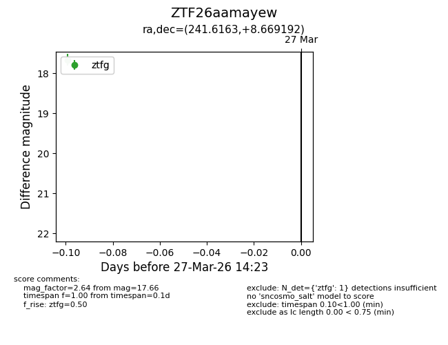
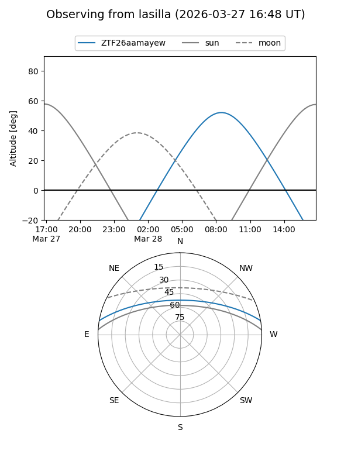
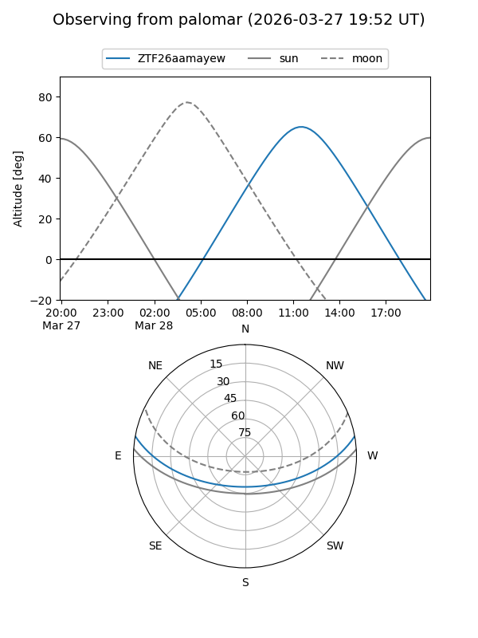

ZTF26aamayew
Target ZTF26aamayew at 2026-03-27 14:25
Aliases and brokers:
FINK: link
Lasair: link
ALeRCE: link
alt names
ZTF26aamayew (ztf,fink_ztf)
Coordinates:
equatorial (ra, dec) = 241.6163,+8.66919
equatorial (HMS+DMS) = 16:06:27.90,+08:40:09.09
galactic (l, b) = (20.5615,+40.44799)
Flags:
Photometry:
last ztfg=17.66
1 ztfg detections
Lightcurve

Visibility


Additional plots